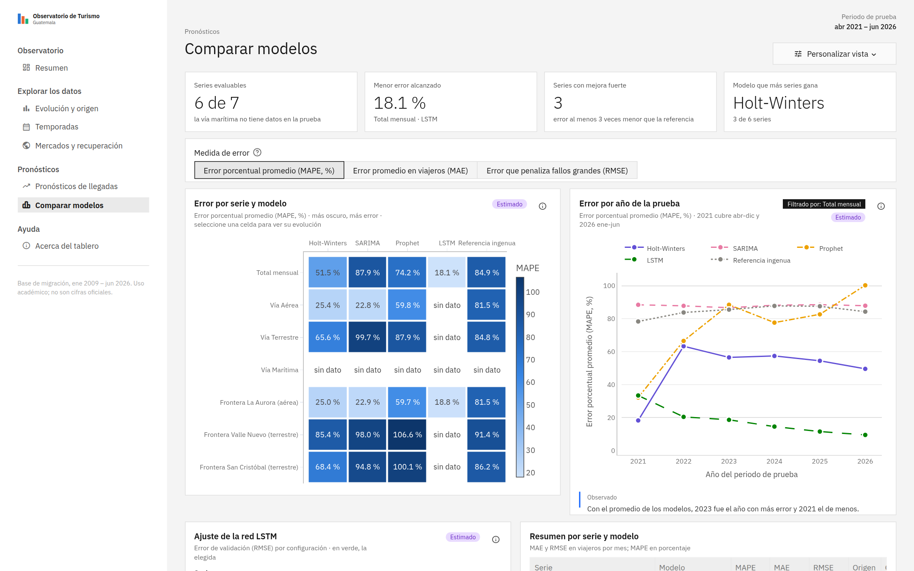
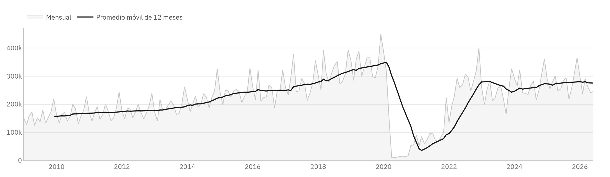

CursoCC3066 Data Science · Universidad del Valle de Guatemala 25 de octubre de 2026
Los datos provienen de una base de migración de uso académico (enero de 2009 a junio de 2026) y no son estadísticas oficiales del INGUAT ni del Instituto Guatemalteco de Migración.
01
Para qué sirve el tablero
La dirección necesita responder con frecuencia las mismas preguntas: cuántos viajeros llegan, en qué meses, desde qué mercados y qué tan confiables son los pronósticos con los que se planifica. Hoy esas respuestas dependen de pedir un informe. El tablero las pone a un par de clics.
3.4 Mviajeros en 2025, el 81 % de 2019
65 %de las llegadas de 2025 entraron por tierra
66índice de Centroamérica frente a 2019 (= 100)
18 %error del mejor pronóstico del total mensual
Lo que más pesa en estas cifras es la composición de la demanda. La recuperación posterior a la pandemia la empujan los mercados de larga distancia: Norteamérica, Sudamérica, Europa y Asia ya superan su volumen de 2019. Centroamérica, que sigue siendo el origen principal, está en dos tercios de aquel nivel. Una parte de esa diferencia puede deberse a que la fuente cambió su forma de registrar en 2021 y en 2023, y el tablero lo advierte junto a las cifras afectadas.
En pronósticos el panorama es desigual. Para el total mensual, la vía aérea y el aeropuerto La Aurora, el mejor modelo se equivoca en torno a una quinta parte, lo que basta para planificar. Para las series terrestres el error supera el 65 % y esas cifras deben tomarse con reserva.
Cómo está organizado
El tablero tiene siete páginas. Una de resumen; tres para explorar la demanda (evolución y origen, temporadas, mercados); dos para los pronósticos (lo que dijo cada modelo y cómo se comparan), y una de ayuda con el glosario y las limitaciones. Contiene once gráficas interactivas, y diez de ellas trabajan en pares: al seleccionar algo en la primera, la segunda muestra el detalle de esa selección.
Qué cubre y qué no
Llegadas mensuales de enero de 2009 a junio de 2026 (161 036 registros).
Turistas y excursionistas por defecto, porque son los únicos tipos registrados igual en todo el periodo; los demás se pueden agregar.
Desgloses por vía, puesto fronterizo, país, región y región de la OMT.
Pronósticos de abril de 2021 a junio de 2026 para siete series: el total, las tres vías y las tres fronteras con más movimiento.
No incluye modelos nuevos; integra los de los Laboratorios 1 y 2.
No hay cifras posteriores a junio de 2026.
No es una fuente oficial.
La vía marítima no se puede evaluar: desde 2017 la fuente solo registra cruceristas y otros tipos de viajero por esa vía. El tablero lo explica en lugar de mostrar una gráfica vacía.
02
Las preguntas de partida
Antes de diseñar pantallas hicimos una lista de lo que la dirección suele preguntar al planificar promoción, personal y capacidad, y conservamos solo lo que la fuente permite contestar con rigor.
Pregunta
Decisión que informa
Página
¿Cómo ha evolucionado la llegada de viajeros y por qué vía entran?
Metas anuales y capacidad por vía
Evolución y origen
¿De qué países vienen y por qué puestos ingresan?
Promoción y atención en fronteras
Evolución y origen
¿En qué meses se concentra la demanda? ¿Un año dado fue normal?
Calendario de personal y campañas
Temporadas
¿Qué mercados ya superaron su nivel de 2019?
Estrategias de reactivación
Mercados y recuperación
¿Qué peso tiene cada región y cada país de origen?
Reparto del presupuesto de promoción
Mercados y recuperación
¿Qué pronosticaron los modelos y qué tan cerca quedaron?
Uso de pronósticos en la planificación
Pronósticos de llegadas
¿Qué modelo conviene en cada serie y hasta qué horizonte?
Elección y actualización de modelos
Comparar modelos
Quedaron fuera las preguntas sobre gasto, estadía u ocupación hotelera, porque la base no tiene esas variables, y las que buscan explicar por qué cambió la demanda. Los registros muestran que las llegadas subieron o bajaron, pero no permiten atribuirlo a una campaña, un evento o una política. También descartamos pronosticar más allá de junio de 2026: los modelos disponibles no lo hicieron y no entrenamos modelos nuevos.
El orden de las preguntas es el de la navegación: primero lo que ocurrió, después lo que se esperaba y al final cuánto creerle a esa expectativa.
03
Criterios de diseño
Tomamos como referencia la forma en que se construyen los productos de datos empresariales y la investigación sobre percepción visual. Cada criterio responde a algo concreto que un directivo necesita al usar la herramienta.
Un sistema visual, no una página
La interfaz sigue la estructura de IBM Carbon, el sistema de diseño de IBM para productos analíticos: fondo gris claro, mosaicos blancos con borde fino, sin sombras ni esquinas redondeadas, y una escala tipográfica corta. Todo trazo que no representa un dato se eliminó o se dejó en gris tenue (Tufte, 2001). Lo elegimos porque está pensado para pantallas con muchos datos y mucha interacción, que es exactamente este caso, y porque obliga a que el color lo pongan los datos y no la decoración. Por la misma razón los controles van en negro: el azul, el naranja y el aqua quedan reservados para las vías de ingreso.
Panorama primero, detalle a petición
Cada página abre con una fila de indicadores y una vista general; el detalle aparece al seleccionar. Es el patrón que Shneiderman (1996) describió para la búsqueda visual y el que usan herramientas como Power BI con su filtro cruzado. Cuando una gráfica está filtrada por otra, su encabezado lo muestra con una etiqueta negra («Filtrado por: 2019 · Aérea»), de modo que el estado de la pantalla siempre es visible.
La explicación, solo si se pide
Los títulos son cortos y el subtítulo dice las unidades y el alcance. La explicación completa de cada gráfica está detrás de un ícono de información. Un directivo que ya conoce el tablero no tiene que leer lo mismo cada vez, y quien lo abre por primera vez sabe dónde buscar. Few (2006) insiste en que un tablero debe leerse de un vistazo, y las instrucciones permanentes van en contra de eso.
La codificación más precisa para lo que más importa
Volúmenes y errores se comparan con barras y posición sobre un eje común, que es lo que el ojo lee con más precisión (Cleveland y McGill, 1984). El color de intensidad se usa solo para patrones en dos dimensiones, como la estacionalidad o los índices, y siempre con el valor escrito o disponible en el tooltip.
Usabilidad
Revisamos la interfaz con las heurísticas de usabilidad de Nielsen (1994). Las que más pesaron fueron la visibilidad del estado, el control del usuario (un doble clic deshace cualquier selección) y los mensajes que explican qué hacer cuando un filtro no deja datos.
Lo medido, separado de lo estimado
Cada gráfica lleva una etiqueta: azul para datos observados y violeta para estimaciones de modelos. Las lecturas escritas bajo las gráficas indican también si son una observación, una interpretación o una estimación. Ninguna lectura atribuye causas.
Tipografía
Usamos IBM Plex Sans en la interfaz, en las gráficas y en este documento. Es la tipografía de Carbon, tiene cifras tabulares que alinean columnas de números y se lee bien en los tamaños pequeños de ejes y leyendas. Las cifras grandes van en peso ligero, como en los indicadores de las herramientas empresariales, para que el número domine sin saturar la pantalla. La aplicación sirve la fuente desde el propio repositorio y se ve igual en cualquier equipo.
04
Color
Cada color tiene una sola función y la conserva en todas las páginas. Usamos esquemas cualitativos para identidad, secuenciales para magnitud y divergentes para desviación (Harrower y Brewer, 2003). Medimos la paleta con simulaciones de daltonismo en el espacio perceptual OKLab (Ottosson, 2020) y verificamos el contraste del texto con las pautas WCAG 2.2.
Uso
Colores
Por qué
Vías de ingreso
Aérea Terrestre Marítima
Matices bien separados y de luminosidad parecida. El par más cercano mantiene una distancia ΔE de 9.2 con deuteranopia y de 9.6 con tritanopia, por encima del umbral de 8 a partir del cual se distinguen. Cielo, tierra y mar ayudan a recordarlos.
Modelos
Holt-Winters SARIMA Prophet LSTM Referencia ingenua
Distintos de los de las vías, para que ningún color nombre dos cosas. Con tritanopia el amarillo y el rosa se acercan (ΔE 5.8), así que cada modelo tiene además su propio trazo de línea. Lo real va siempre en negro.
Magnitud
Un solo azul que se oscurece: más oscuro es más. Evitamos el arcoíris porque crea fronteras que los datos no tienen.
Desviación
Solo en el índice de recuperación: rojo por debajo del año base, gris igual y azul por encima. El centro neutro marca el punto que importa.
Interfaz
Texto y controles Texto secundario Fondo
Escala de grises g10 de Carbon. Sobre el fondo, el texto principal tiene un contraste de 16.5:1 y el secundario de 7.1:1, ambos por encima del nivel AAA.
Tres colores de datos quedan por debajo del contraste de 3:1 recomendado para gráficos: el aqua (2.7:1), el rosa (2.6:1) y el amarillo (2.1:1). Los mantuvimos porque son los que mejor se separan entre sí con daltonismo, y los compensamos con leyendas siempre visibles, valores exactos en tooltips y tablas, y trazos distintos por modelo.
05
Interfaz y navegación
Todas las páginas de análisis comparten la misma estructura, así que basta aprender una.
Boceto de la plantilla. Navegación lateral por secciones; encabezado con la fecha de los datos y el menú para elegir qué gráficas ver; filtros de página en una franja; indicadores, y dos mosaicos en los que el primero filtra al segundo.
Sección
Página
Contenido
Observatorio
Resumen
Indicadores con tendencia, llegadas mensuales con promedio móvil, lectura principal y accesos.
Explorar los datos
Evolución y origen
Llegadas por vía → origen de la selección
Temporadas
Mapa de calor año × mes → perfil mensual por vía
Mercados y recuperación
Índice de recuperación → orígenes por región y país
Pronósticos
Pronósticos de llegadas
Real frente a pronóstico → error por modelo
Comparar modelos
Error por serie y modelo → error por año; ajuste de la LSTM; tabla resumen
Ayuda
Acerca del tablero
Glosario, colores, limitaciones, equipo y fuentes
05
Pantallas
Resumen. Los indicadores muestran el valor, la variación y la tendencia anual en una minigráfica. Debajo, las llegadas mensuales con su promedio móvil de doce meses y la lectura principal, separada en lo observado y lo estimado.Evolución y origen. Las dos gráficas enlazadas comparten la fila para que el efecto de la selección se vea sin desplazarse.
05
Pantallas de pronóstico
Pronósticos de llegadas. Los indicadores resumen el modelo con menor error de la serie elegida antes de entrar al detalle.

Comparar modelos. La medida de error elegida se aplica a todas las gráficas de la página.
06
Las gráficas
Elegimos cada forma por la tarea que resuelve (Munzner, 2009): primero qué necesita saber el usuario, luego la estructura de los datos y al final la gráfica. Los indicadores, los controles, los textos y la tabla resumen no se cuentan entre las once.
#
Gráfica
Forma
Interacción principal
1
Llegadas por vía de ingreso
Barras apiladas
Filtra la 2; año, trimestre o mes
2
Origen de los viajeros
Barras horizontales apiladas
Dimensión y número de categorías
3
Viajeros por año y mes
Mapa de calor
Filtra la 4; uno o varios años
4
Perfil mensual por vía
Barras apiladas con referencia
Responde a la 3
5
Índice de recuperación
Mapa de calor divergente
Filtra la 6; dimensión y año base
6
Orígenes por región y país
Treemap
Acercamiento por región
7
Real frente a pronóstico
Líneas con banda de 95 %
Filtra la 8; mes, trimestre o año
8
Error por modelo
Barras horizontales ordenadas
MAPE, MAE o RMSE
9
Error por serie y modelo
Mapa de calor con valores
Filtra la 10
10
Error por año de la prueba
Líneas con marcadores
Responde a la 9
11
Ajuste de la red LSTM
Barras con resalte
Serie
Además de esas once, el resumen muestra las llegadas mensuales con su promedio móvil, que sirve de entrada al resto.
1 · Llegadas por vía de ingreso
Barras apiladas · filtra la gráfica 2
La altura de cada barra da el total y los segmentos dan la composición por vía, dos cosas que el directivo necesita ver juntas. Una línea por vía habría escondido el total. La barra, además, es un blanco cómodo para seleccionar un periodo.
Al seleccionar la barra aérea de 2019, el resto se atenúa.
2 · Origen de los viajeros
Barras horizontales apiladas, de mayor a menor · responde a la 1
Los nombres de países y puestos fronterizos son largos: en horizontal se leen sin girar la cabeza, y el orden descendente contesta cuáles son los principales. Un gráfico circular con más de cinco categorías obliga a comparar ángulos, que se leen mal.
Países de origen de los viajeros aéreos de 2019.
3 · Viajeros por año y mes
Mapa de calor secuencial · filtra la gráfica 4
Los 210 meses forman una cuadrícula natural de años por meses. Se ven a la vez las temporadas, con diciembre, marzo y abril como columnas más oscuras, y los años atípicos, como la franja clara de 2020 y 2021. Dieciocho líneas superpuestas no se habrían podido leer.
Turistas y excursionistas de todas las vías.
4 · Perfil mensual por vía
Barras apiladas con línea de referencia · responde a la 3
Al pasar de dieciocho años a uno interesa qué vía explica cada temporada y si el año fue normal. La línea punteada es el promedio de 2015 a 2019 en la misma escala, sin un segundo eje.
2025 frente al promedio previo a la pandemia.
5 · Índice de recuperación
Mapa de calor divergente centrado en 100 · filtra la gráfica 6
La pregunta es si cada mercado está por encima o por debajo de 2019, y los mercados tienen tamaños muy distintos. El índice los pone en la misma escala y el color responde antes de leer el número. Cada año se compara con los mismos meses del año base, para que 2026, que llega a junio, no parezca una caída.
Índice por región, 2019 = 100.
6 · Orígenes por región y país
Treemap · responde a la 5
Los orígenes forman una jerarquía muy concentrada. El treemap muestra el peso de cada región y, dentro de ella, el de cada país, y permite acercarse con un clic.
Orígenes de los viajeros en 2025.
7 · Real frente a pronóstico
Líneas con banda opcional de 95 % · filtra la gráfica 8
En una serie continua importan la forma y la distancia entre lo real y lo pronosticado. La historia de entrenamiento va en gris y una línea vertical marca el punto desde el que los modelos ya no vieron datos.
Total mensual, con el rango probable de SARIMA y Prophet.
8 · Error por modelo
Barras horizontales ordenadas · responde a la 7
Es una sola medida entre pocos elementos: la longitud es lo que mejor se compara y el orden pone arriba al modelo que menos se equivocó.
Error porcentual promedio en todo el periodo de prueba, total mensual.
9 · Error por serie y modelo
Mapa de calor con valores · filtra la gráfica 10
Siete series por cinco modelos, y la pregunta de qué columna gana en cada fila. La referencia ingenua queda en la misma fila para comparar; donde no hay evaluación posible, la celda lo dice.
MAPE por serie y modelo.
10 · Error por año de la prueba
Líneas con marcadores · responde a la 9
Muestra si el error crece a medida que el pronóstico se aleja del corte, lo que indica cada cuánto convendría actualizar un modelo.
Total mensual. La LSTM mejora con el tiempo y Prophet empeora.
11 · Ajuste de la red LSTM
Barras con la configuración elegida resaltada
Compara el error de validación de las cuatro configuraciones probadas. Resaltar solo la elegida dirige la atención sin agregar colores y deja ver que la LSTM se eligió con meses previos al corte, no con el periodo de prueba.
Error de validación por configuración, total mensual.
Llegadas mensuales
Área y promedio móvil de 12 meses · página de resumen
El promedio móvil elimina la estacionalidad y deja ver la tendencia: el crecimiento hasta 2019, la caída de 2020 y la recuperación posterior.

Turistas y excursionistas, todas las vías.
07
Modelos de pronóstico
El tablero no entrena modelos. Integra los pronósticos de los Laboratorios 1 y 2, que comparten series, punto de corte (marzo de 2021) y horizonte (63 meses), y por eso se pueden comparar entre sí.
Modelo
Origen
Configuración
Holt-Winters
Lab 1
Tendencia aditiva y estacionalidad multiplicativa; en Valle Nuevo, aditiva con tendencia amortiguada.
SARIMA
Lab 1
Orden propio de cada serie; (1,1,1)×(0,0,1,12) en el total y en La Aurora.
Prophet
Lab 1
Estacionalidad anual y una variable que marca la pandemia, de marzo de 2020 a diciembre de 2021.
LSTM
Lab 2
Una capa de 32 unidades y ventana de seis meses; total mensual y La Aurora.
Referencia ingenua
Lab 1
Repite el último año de entrenamiento.
Serie
Mejor modelo
MAE (viajeros/mes)
MAPE
MAPE referencia
Total mensual
LSTM
40 554
18.1 %
84.9 %
Vía aérea
SARIMA
22 915
22.8 %
81.5 %
Frontera La Aurora
LSTM
15 908
18.8 %
81.5 %
Vía terrestre
Holt-Winters
107 809
65.6 %
84.8 %
Frontera San Cristóbal
Holt-Winters
17 583
68.4 %
86.2 %
Frontera Valle Nuevo
Holt-Winters
35 211
85.4 %
91.4 %
En las tres series resaltadas el mejor modelo deja el error en menos de un tercio del de la referencia. En las terrestres la mejora es pequeña. Conviene tener presente que la prueba arranca en plena reapertura, un cambio que ningún modelo entrenado hasta marzo de 2021 podía prever.
Las métricas del tablero usan la misma fórmula del Laboratorio 1 y reproducen sus resultados; Prophet difiere en menos de 1 % por la aleatoriedad de su optimizador. Al integrar los datos encontramos que el SARIMA que el Laboratorio 1 había elegido para San Cristóbal solo producía valores válidos en 10 de los 63 meses, de modo que su error no era comparable con el de los demás. Usamos en su lugar la siguiente variante, evaluada en los 63 meses.
08
Herramienta
Construimos el tablero en Python con Streamlit y Plotly. Antes de decidir comparamos las cinco opciones gratuitas que considerábamos viables.
Criterio
Peso
Streamlit + Plotly
Dash
Shiny
Panel
Voilà
Continuidad con los laboratorios (Python)
25 %
5
5
1
5
5
Esfuerzo para enlazar gráficas
20 %
4
5
5
3
2
Velocidad de desarrollo en equipo
20 %
5
3
3
3
3
Control del diseño visual
15 %
4
5
4
3
2
Publicación gratuita
10 %
5
3
3
3
3
Curva de aprendizaje
10 %
5
3
2
3
4
Total ponderado
4.65
4.20
2.95
3.50
3.25
La puntuación es nuestra evaluación. El factor decisivo fue la continuidad: los resultados de los laboratorios ya estaban en pandas y Streamlit los usa sin intermediarios, mientras que Shiny habría exigido reescribir el procesamiento en R. Dash ofrece más control fino del diseño, pero cada enlace entre gráficas requiere callbacks explícitos. En Streamlit, la selección hecha en una gráfica de Plotly regresa a Python y la página se recalcula con ella, lo que resolvió los cinco pares con poco código.
Para lograr un acabado comparable al de una herramienta empresarial usamos el sistema de temas de Streamlit (paleta, tipografía servida desde el repositorio, bordes) y estilos sobre contenedores concretos para construir los mosaicos, los indicadores y las etiquetas. Plotly aporta tooltips, selección por clic o por caja y el treemap con acercamiento, y las mismas funciones generan las gráficas de la aplicación y las figuras de este documento.
Encontramos una limitación: Plotly no permite seleccionar celdas de un mapa de calor. La resolvimos con una capa de marcadores invisibles, uno por celda, que recibe el clic y enmarca la celda elegida.
09
Plan de trabajo
Fechas y responsables según el historial de los repositorios del tablero y de los laboratorios. El trabajo de análisis no deja commits y se indica así.
#
Tarea
Responsable
Fecha
Evidencia
1
Modelos de pronóstico (Labs 1 y 2)
Christa Isabella Obando Guzmán, Anthony Lou Schwank
2 ago 2026
Repositorio de los laboratorios, 23 jul a 2 ago
2
Preguntas de gestión y alcance
Todo el equipo
22 oct 2026
Análisis
3
Base en Streamlit, datos y paleta de vías
Anthony Lou Schwank
22 oct 2026
c67ae2fa701ced
4
Gráficas 1 y 2 y README inicial
Anthony Lou Schwank
22 oct 2026
a701ceda959cfa
5
Análisis de la entrega final e instrucciones de implementación
Christa Isabella Obando Guzmán, Fabian Prado Dluzniewski, Luis Fernando Mendoza Alvarez
25 oct 2026
Análisis
6
Integración de los modelos
Luis Fernando Mendoza Alvarez
25 oct 2026
a2a6fdf
7
Gráficas 3 a 11 y páginas
Luis Fernando Mendoza Alvarez
25 oct 2026
aa12cc8ee3fb42f68a6d8
8
Pruebas automáticas
Luis Fernando Mendoza Alvarez
25 oct 2026
bfb5f86
9
Sistema visual e interfaz
Luis Fernando Mendoza Alvarez
25 oct 2026
Commits del 25 de octubre
10
Documento de diseño
Luis Fernando Mendoza Alvarez
25 oct 2026
Commits del 25 de octubre
11
Revisión final y entrega
Todo el equipo
25 oct 2026
Pendiente
Verificación
Veinticuatro pruebas automáticas recorren todas las páginas con filtros vacíos, las siete series, los tres niveles de detalle, las tres medidas de error y la opción de ocultar todas las gráficas. Los cinco pares enlazados, la selección múltiple, la selección por caja, el doble clic para restablecer y el acercamiento del treemap se probaron con clics reales en el navegador.
10
Limitaciones
Los datos son de uso académico. La base combina respaldos históricos (2009-2020), registros del Instituto Guatemalteco de Migración (2021-2022) y conteos depurados del INGUAT (2023-2026); parte de los cambios entre esos periodos puede deberse al registro.
Desde 2023 la columna de país agrupa algunos mercados, lo que limita las comparaciones por país que cruzan ese año.
2026 llega hasta junio; los índices comparan siempre los mismos meses.
Los modelos se evaluaron durante la reapertura, un periodo atípico, y no hay pronósticos posteriores a junio de 2026.
El tablero describe lo ocurrido y no explica por qué. Antes de convertir un hallazgo en una decisión conviene contrastarlo con otras fuentes, como la ocupación hotelera, la conectividad aérea o el gasto turístico.
Referencias
Cleveland, W. S., y McGill, R. (1984). Graphical perception. Journal of the American Statistical Association, 79(387), 531-554.
Few, S. (2006). Information dashboard design. O'Reilly Media.
Harrower, M., y Brewer, C. A. (2003). ColorBrewer.org: An online tool for selecting colour schemes for maps. The Cartographic Journal, 40(1), 27-37.
IBM. (s. f.). Carbon Design System: Data visualization. https://carbondesignsystem.com/data-visualization/getting-started/
Munzner, T. (2009). A nested model for visualization design and validation. IEEE Transactions on Visualization and Computer Graphics, 15(6), 921-928.
Nielsen, J. (1994). Enhancing the explanatory power of usability heuristics. Proceedings of CHI '94, 152-158.
Ottosson, B. (2020). A perceptual color space for image processing. https://bottosson.github.io/posts/oklab/
Shneiderman, B. (1996). The eyes have it: A task by data type taxonomy for information visualizations. Proceedings of the IEEE Symposium on Visual Languages, 336-343.
Tufte, E. R. (2001). The visual display of quantitative information (2.ª ed.). Graphics Press.
World Wide Web Consortium. (2023). Web Content Accessibility Guidelines (WCAG) 2.2.